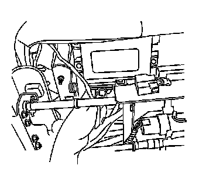

Memory Positioning Module: Service and Repair
Memory Seat Control Module Replacement
Removal Procedure
Caution: Refer to SIR Caution (SIR Caution) .

1. Remove the front seat cushion. Refer to Front Seat Cushion Replacement (Front Seat Cushion Replacement) .
2. Disconnect the electrical connectors from the heated seat module.

3. Remove the screws (1) retaining the memory seat module to the seat frame.
4. Remove the memory seat module.
Installation Procedure
Notice: Refer to Fastener Notice (Fastener Notice) .
1. Install the memory seat module and install the memory seat module screws (1).
Tighten the screws 2 N.m (18 lb in).
2. Connect the electrical connections to the module.
3. Install the front seat cushion. Refer to Front Seat Cushion Replacement (Front Seat Cushion Replacement) .
4. Calibrate the memory seat module for proper adjustable pedal operation. Refer to Adjustable Pedal System Calibration (Programming and Relearning) .
5. Calibrate the seat. Refer to Memory Seat Calibration (Programming and Relearning) .
6. Program the memory seat control module. Refer to Memory Seat Control Module Programming and Setup (Programming and Relearning) .